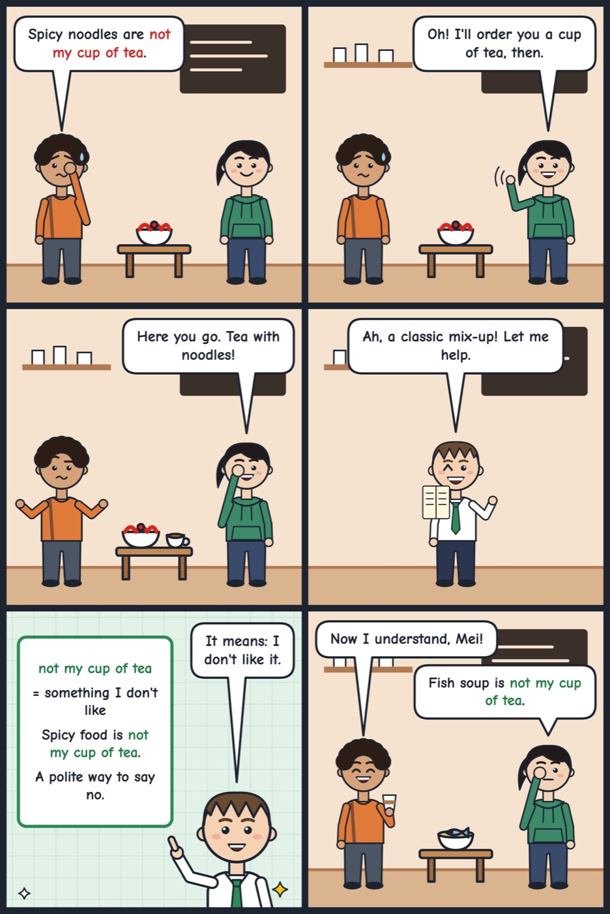

not my cup of tea
Something you don't like or enjoy.
Spicy food is not really my cup of tea.
Tip: Say 'X is not really my cup of tea' to politely say you don't enjoy something; it's a softer, friendlier way to say 'I don't like it', and it works with activities, food, music and people's styles.
Hear it in conversation
Workbook
1. What does it mean?
In this conversation, what does 'not my cup of tea' mean?
2. Fill the gap
I watched a few episodes of that reality series, but it was just .
3. Choose the best reply
Amira: Do you want to come to the noisy street festival with me this weekend?
4. Your turn: speak
Is there a type of activity or entertainment that you don't enjoy? Tell me about it.
Show an example answer
I'd say big, loud parties are not really my cup of tea. I enjoy meeting friends, but I prefer a quiet dinner where we can actually talk. After a few hours in a crowd, I'm usually exhausted.
Answer key: not my cup of tea
- 1. B. Something Ken doesn't enjoy
- 2. not my cup of tea
- 3. A. Thanks, but big crowds are not really my cup of tea.
- 4. Example: I'd say big, loud parties are not really my cup of tea. I enjoy meeting friends, but I prefer a quiet dinner where we can actually talk. After a few hours in a crowd, I'm usually exhausted.
See it in a comic
